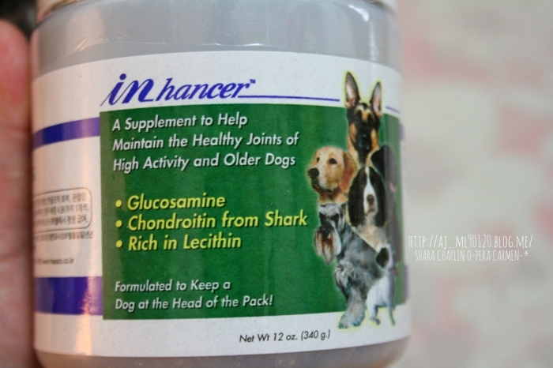
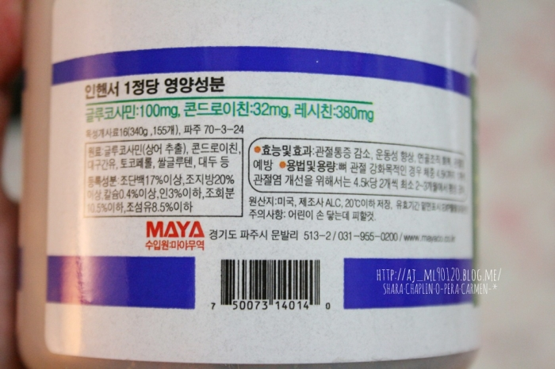
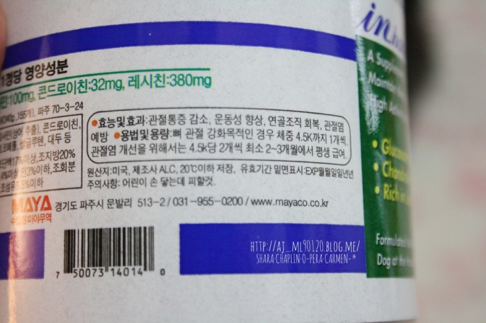
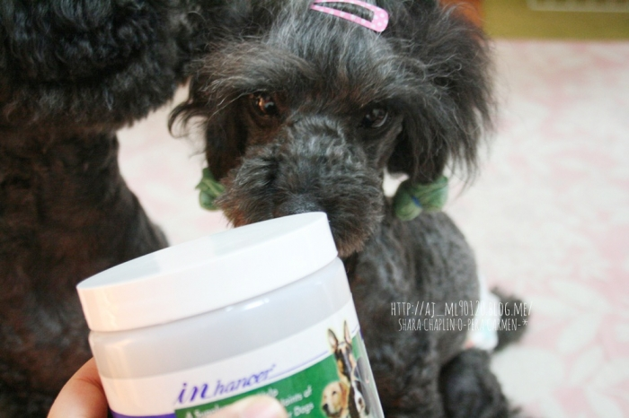
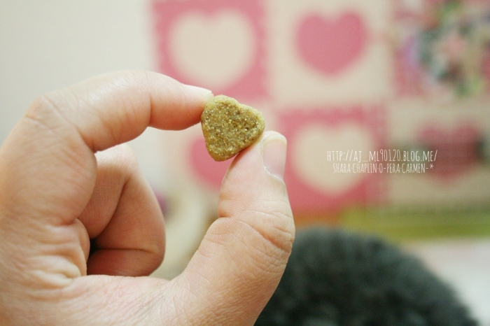
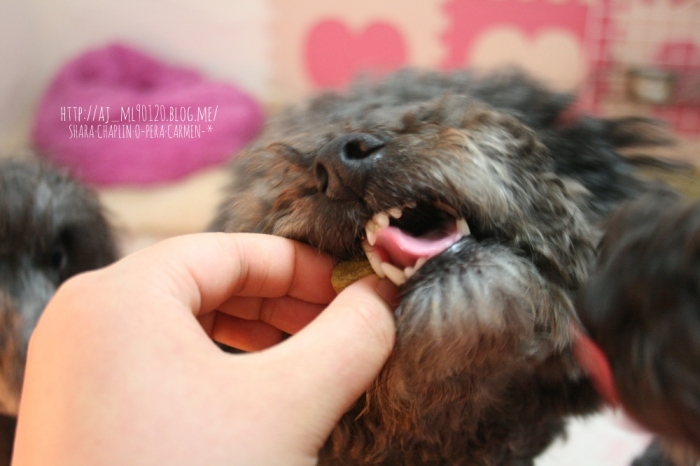
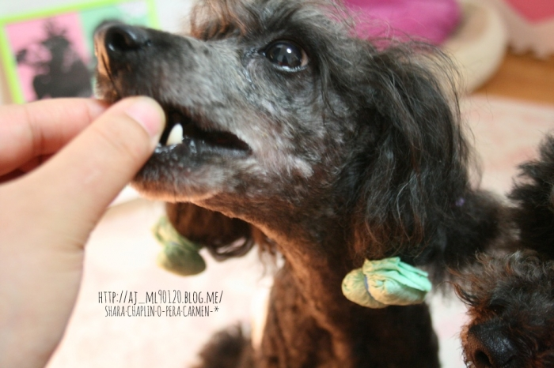
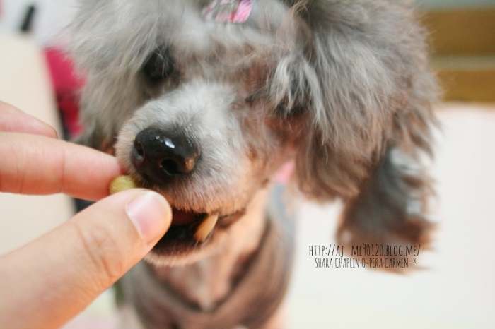
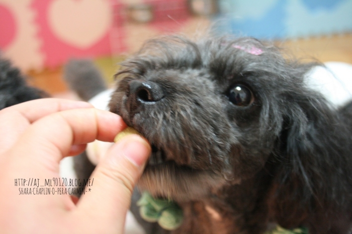

안녕하세요:)
일주일전 벡스코에서 애들박람회에서 무료진료소에서 플린이가 슬개골1기에서 2기사이 진단을 받았는데요
그땐 슬개골탈구소리듣고 놀래서 멍-때리다가 묻고싶은것두 못물어보고;;
일단 병원가기전에 인터넷에 슬개골탈구 포스팅을 쫘악 훑어보았는데요
2기까지 진행이 된 상태는 아니니깐 영양제먹이고 꾸준한 운동 마사지를 하면
진행속도를 늦춰줄수도 있다고 하더라구요
무엇보다 근육을 키워야된다는 말에 다리에 무리가 가지않을정도로 짧게짧게 산책겸 운동을 하고있어요!ㅎㅎ
그러다 영양제도 알아보았는데
하도 종류가 많아서 효능이 다거기서 거기같고ㅋㅋㅋ
그러다 인영양제 자매품 인핸서를 보게되었어요:)
인제품은 제가 애견미용입문하면서 미용견으로 푸드리를 처음 키우게 되었을때
미용견은 아무래도 풀콧관리때문에 모질 모량도 중요하다보니 학원에서 추천해줬던
인 영양제를 처음 접하게되었는데요:)
그때는 피부모질에만 집중적으로 신경을 쓰다보니 자매품 인핸서는 쳐다보지도않았다죠+_+!
저는 인제품에 어느정도 신뢰를 하고있던 편이라
인핸서 구입하기로 맘먹었는데
갑자기 머릿속에서 띵!

반가워:)
340g-
유통기간도 2015년 4월까지더라구요:)

관절영양제는
글루코사민/콘드로이친 함량을 잘보고 구매하라고 하더라구요-
인핸서는 글루코사민이 100mg 콘드로이친이32mg이네요:)

급여량을 보니 삼형제&사라는 하루에 한개씩 먹으면될것같아요:)

얘가 탈구판정받은;;+_+
삼형제중 제일 작은녀석이 점프하면 제 허리보다 더 높이 뛰어요-_-
그렇게 뛰는데 멀쩡한게 더 이상하지;;에혀

피부모질 인영양제는 색이 더 진하고 둥그르스름한 모양인데
인핸서는 색도 옅고 모양도 하트예요♡

페라는 예방용으로 먹어서 한개씩:)

멘이도 예방용으로 한개씩:)

사라도 예방용으로:)

플린이는 강화목적도 있지만 관절염개선목적도 있어서
오늘아침까지는 두개씩 먹었어요:)
영양제먹고 꾸준히 관리해서 말짱한 다리가 되길>.
|